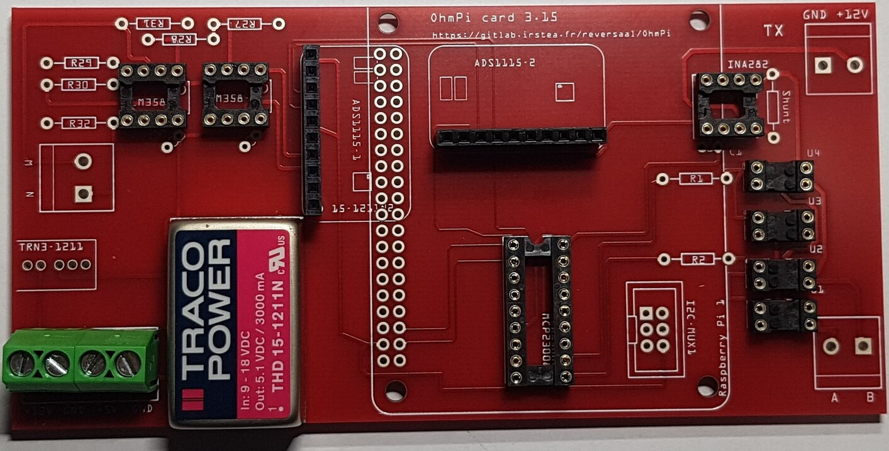
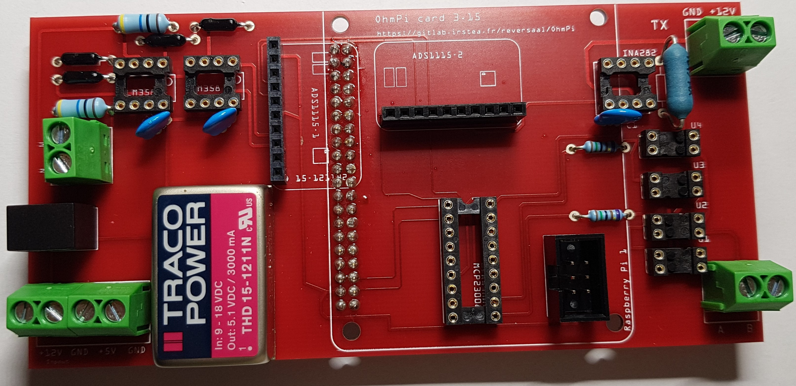
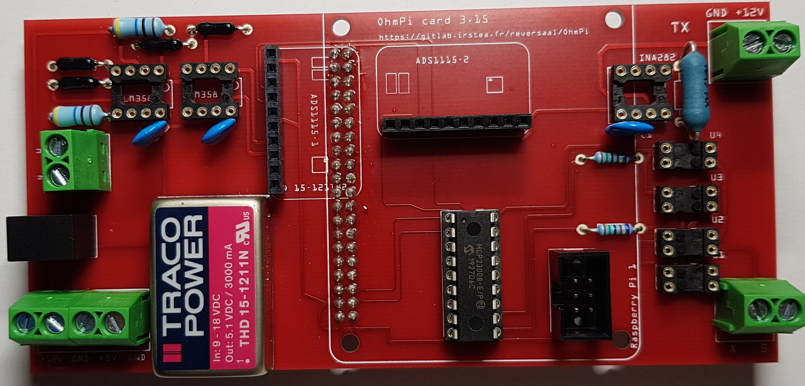
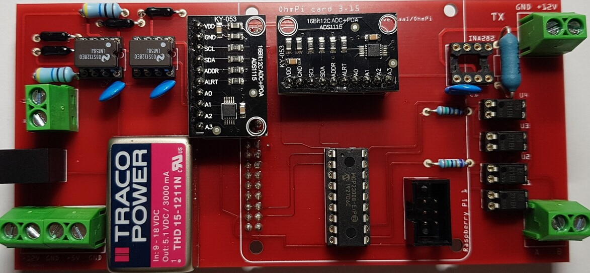
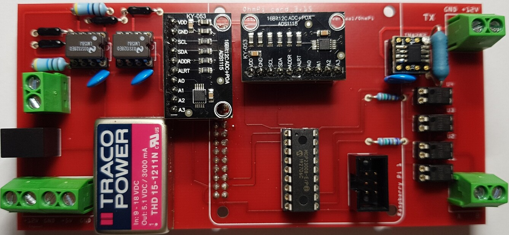

OhmPi V 2.00 (64 or 128 électrodes)¶


Note
In this version, we have developed two new board types that allow the assembly of Ohmpi v2.00, a measurement board and a multiplexer board. This new version is made up of:
A measurement board for four-point measurement
4 multiplexer cards
A box
The philosophy of Ohmpi¶
The philosophy of Ohmpi V2.00 is to offer a new DIY multielectrode resistivity meter. It is a resistivity meter with 64 electrodes , which can be upgraded to 128 electrodes. It is limited to low-current injection,but suitable for small laboratory experiments and small field time-lapse monitoring. Ohmpi, is developed by a team that seeks to share all its experience and wishes to improve and offer a more and more robust tool to the community.Ohmpi V2.00 is a completely different version from the previous one. We will stop the development on the previous version, to dedicate our efforts on this new version.
Technical data¶
Parameter |
|
Units |
|
Units |
Electrodes |
32 |
64 to 128 |
||
Operating temperature |
-0 to 50 |
°c |
-25 to 50 |
°c |
Power consumption of CPU and control system |
18.5 |
W |
18.5 |
W |
Voltage injection |
12 |
V |
12 |
V |
Battery |
9 |
V |
12 |
V |
Current |
0 to 40 |
mA |
0 to 40 |
mA |
Min pulse duration |
150 |
mS |
150 |
mS |
Input impedance |
80 |
Mohm |
80 |
Mohm |
Data storage |
micro SD card |
micro SD card |
||
Resolution |
O.O1 |
ohm |
O.O1 |
ohm |
STEP n°1 : Raspberry Pi configuration¶
OS installation¶
Required components |
Quantity |
Raspberry Pi 4 Model B |
1 |
Micro SD 32 Go |
1 |
HDMI Cable |
1 |
Computer mouse |
1 |
Computer Keyboard |
1 |
The first step is to start up the Raspberry Pi board, including installation of an OS (operating system). For this step, the installation instructions are well described on the Raspberry website
Watch the vidéo “how to set up your raspberry Pi” (https://www.youtube.com/watch?v=wjWZhV1v3Pk)
The authors recommend installing the latest stable and complete version of Raspbian by using NOOBS (a simple-to-use operating system installer).
or you can visit this website : (https://projects.raspberrypi.org/en/projects/raspberry-pi-setting-up)
Note
All the development tests were performed on Raspberry Pi 3 Model B, we used the following version of Raspbian:

Warning
Once the OS has been installed, 1-wire, spi and GPIO remote option must be deactivated via the Raspbian GUI settings menu. Failure to carry out this task may cause damage to the relay shield cards during measurements.
3. When the relays are connected to the GPIO, make sure that all the GPIOs are in the low position when the raspberry starts up. If not, the relays will activate unexpectedly. To ensure that the GPIOs are in Low position, you will need to modify the /boot/config.txt file.
Run the terminal, and write
cd /boot/
Open config.txt with GNU nano editor
sudo nano config.txt
At the end of the file write :
gpio=8=op,dl gpio=7=op,dl
Press Ctrl +O to save the modifications and press enter
Press Ctrl +x to escap and return to the terminal
Close the terminal
Virtual Environnement and packages¶
A virtual environment is a way to have multiple, parallel instances of the Python interpreter, each with different package sets and different configurations. Each virtual environment contains a discrete copy of the Python interpreter, including copies of its support utilities. It also protects your system in case of problems with the packages.
All dependencies are specified in requirements.txt
Note
All instructions below should be typed in the terminal
It is first necessary to ensure that the libatlas-base-dev library is installed:
sudo apt-get install libatlas-base-dev
We strongly recommend users to create a virtual environment to run the code and installed all required dependencies. It can be done either in a directory gathering all virtual environments used on the computer or within the ohmpy directory.
Create the virtual environment:
python3 -m venv ohmpy
Activate it using the following command:
source ohmpy/bin/activate
Install packages within the virtual environment. Installing the following package should be sufficient to meet dependencies:
pip install RPi.GPIO adafruit-blinka numpy adafruit-circuitpython-ads1x15 pandas
Check that requirements are met using
pip list
You should run you code within the virtual environment to leave the virtual environment simply type:
deactivate
Activate virtual environnement on Thonny (Python IDE) (on Rapberry Pi)¶
If you decided to use a virtual environment, it is necessary to setup Thonny Python IDE the first time you use it.
1- Run the Thonny Python IDE software, Click on raspebrry acces menu > programming> Thonny pythonIDE
2- Thonny’s interface opens, Python runs on the Root (Python 3.7.3 (/usr/bin/python3))

3-Click on Run>select interpreter, a new window opens click on interpret

4-On the new open windows select alternative Pyhton3 or virtual environnement

5- New buttons appeared, selected “locate another python executable “
6- A new window opens, find the folder where there is the python 3 file in the virtual environment folder previously created /home/pi/ohmpi/bin/python3.
7- In the known interpreter tab the path of the virtual environnementshould appear

8- Close the window by clicking on ok.
9- Close thonny to save modifications
STEP n°2: Assembly of the measurement board¶
Required components |

Description¶
{kind=link}
Figure shows the general schematics for the electronic measurement board developed. We have developed a complete “plug and play” measurement board. To measure electrical resistivity with Raspberry Pi. two ADS1115 were used,one for the voltage measurement one for the current measurement, as proposed by Florsch [7]. The ADS1115 is a 16-bit ADC (Analog-to-Digital Converter), with an adaptable gain. The advantage of ADS1115 is that the input signal value could lie between - to + 6.114 V. For the current measurement we have directly integrated the INA282 component, which allows to realize precise current measurement around a shunt resistor. Les étapes de montage son décrite dans les étapes suivantes:
Step n°1 |

|
Installation of female header, 1 by10 pins, for ADS1115 |
Step n°2 |

|
Soldering of 4 Dual-in-line- socket (2 by 2 pins) for optical relay, AQY211EH. |
Step n°3 |

|
Soldering of 1 Dual-in-line- socket (2 by 9 pins) for INA282. |
Step n°4 |

|
Soldering of 1 Dual-in-line- socket (2 by 4 pins) |
Step n°5 |

|
Soldering of 2 Dual-in-line- socket (2 by 4 pins) |
Step n°6 |

|
Alimentation traco Power 12V à 24V |
Step n°7 |
 |
1)Installation of female header, 1 by10 pins, for ADS1115 |
Step n°8 |

|
1)Installation of female header, 1 by10 pins, for ADS1115 |
Step n°9 |

|
1)Installation of female header, 1 by10 pins, for ADS1115 |
Step n°10 |

|
1)Installation of female header, 1 by10 pins, for ADS1115 |
Step n°11 |

|
1)Installation of female header, 1 by10 pins, for ADS1115 |
Step n°12 |

|
1)Installation of female header, 1 by10 pins, for ADS1115 |
Step n°13 |

|
1)Installation of female header, 1 by10 pins, for ADS1115 |
Step n°14 |

|
1)Installation of female header, 1 by10 pins, for ADS1115 |
Step n°15 |

|
1)Installation of female header, 1 by10 pins, for ADS1115 |
Step n°16 |

|
1)Installation of female header, 1 by10 pins, for ADS1115 |
Step n°17 |

|
1)Installation of female header, 1 by10 pins, for ADS1115 |
Step n°18 |
 |
1)Installation of female header, 1 by10 pins, for ADS1115 |
Step n°19 |

|
1)Installation of female header, 1 by10 pins, for ADS1115 |
Step n°20 |
 |
1)Installation of female header, 1 by10 pins, for ADS1115 |
Step n°21 |

|
1)Installation of female header, 1 by10 pins, for ADS1115 |
Step n°22 |

|
1)Installation of female header, 1 by10 pins, for ADS1115 |
Step n°23 |
 |
1)Installation of female header, 1 by10 pins, for ADS1115 |
Step n°24 |
 |
1)Installation of female header, 1 by10 pins, for ADS1115 |